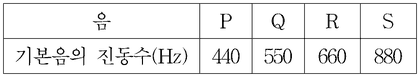

음과 협화도
지문을 먼저 읽고, 이해가 막히는 문단에서 ‘그림으로 보기’를 누르세요. 그림은 문단을 따라 바뀝니다.
1문단음악은 소리로 이루어진 예술이다. 예술이 아름다움을 추구한다면 음악 또한 아름다움을 추구해야 할 것이다. 그렇다면 아름다운 음악 작품은 듣기 좋은 소리만으로 만들어질 수 있는 것일까? 음악적 아름다움은 어떻게 구현되는 것일까?
2문단음악에서 사용하는 소리라고 해도 대부분의 사람들은 피아노 소리가 심벌즈 소리보다 듣기 좋다고 생각한다. 이 중 전자를 고른음, 후자를 시끄러운음이라고 한다. 고른음은 주기성을 갖지만 시끄러운음은 주기성을 갖지 못한다. 일반적으로 음악에서 ‘음’이라고 부르는 것은 고른음을 지칭한다. 고른음은 주기성을 갖기 때문에 동일한 파형이 주기적으로 반복된다. 이때 같은 파형이 1초에 몇 번 반복되는가를 진동수라고 한다. 진동수가 커지면 음높이 즉, 음고가 높아진다. 고른음 중에서 파형이 사인파인 음파를 단순음이라고 한다. 사인파의 진폭이 커질수록 단순음은 소리의 세기가 커진다. 대부분의 악기에서 나오는 음은 사인파보다 복잡한 파형을 갖는데 이런 파형은 진동수와 진폭이 다른 여러 개의 사인파가 중첩된 것으로 볼 수 있다. 이런 소리를 복합음이라고 하고 복합음을 구성하는 단순음을 부분음이라고 한다. 부분음 중에서 가장 진동수가 작은 것을 기본음이라 하는데 귀는 복합음 속의 부분음들 중에서 기본음의 진동수를 복합음의 진동수로 인식한다.
3문단악기가 ㉠내는 소리의 식별 가능한 독특성인 음색은 부분음들로 구성된 복합음의 구조, 즉 부분음들의 진동수와 상대적 세기에 의해 결정된다. 현악기나 관악기에서 발생하는 고른음은 기본음 진동수의 정수배의 진동수를 갖는 부분음들로 이루어져 있지만, 타악기 소리는 부분음들의 진동수가 기본음 진동수의 정수배를 이루지 않는다. 이러한 소리의 특성을 시각적으로 보여 주는 소리 스펙트럼은 복합음을 구성하는 단순음 성분들의 세기를 진동수에 따라 그래프로 나타낸 것이다. 고른음의 소리 스펙트럼은 <그림>처럼 일정한 간격으로 늘어선 세로 막대들로 나타나는 반면에 시끄러운음의 소리 스펙트럼에서는 막대 사이 간격이 일정하지 않다.
4문단[A] 두 음이 동시에 울리거나 연이어 울릴 때, 음의 어울림, 즉 협화도는 음정에 따라 달라진다. 여기에서 음정이란 두 음의 음고 간의 간격을 말하며 높은 음고의 진동수를 낮은 음고의 진동수로 나눈 값으로 표현된다. 가령, ‘도’와 ‘미’ 사이처럼 장3도 음정은 5/4이고, ‘도’와 ‘솔’ 사이처럼 완전5도 음정은 3/2이다. 그러므로 장3도는 완전5도보다 좁은 음정이다. 일반적으로 음정을 나타내는 분수를 약분했을 때 분자와 분모에 들어가는 수가 커질수록 협화도는 작아진다고 본다. 가령, 음정이 2/1인 옥타브, 3/2인 완전5도, 5/4인 장3도, 6/5인 단3도의 순서로 협화도가 작아진다. 서로 잘 어울리는 두 음의 음정을 협화 음정이라고 하고 그렇지 않은 음정을 불협화 음정이라고 하는데 16세기의 음악 이론가인 차를리노는 약분된 분수의 분자와 분모가 1, 2, 3, 4, 5, 6으로만 표현되는 음정은 협화 음정, 그 외의 음정은 불협화 음정으로 보았다.
5문단아름다운 음악은 단순히 듣기 좋은 소리를 연이어 배열한다고 해서 만들어지지 않는다. 음악은 다양한 음이 조직적으로 연결되고 구성된 형태로, 음악의 매체인 소리가 시간의 진행 속에 구체화된 것이라 할 수 있다. 19세기 음악 평론가인 ⓐ한슬리크에 따르면, 음악의 독자적인 아름다움은 음들이 ‘울리면서 움직이는 형식’에서 비롯되는데, 음악을 구성하는 음악적 재료들이 움직이며 만들어 ㉡내는 형식 그 자체를 말한다. 따라서 음악의 가치는 음악이 환기하는 기쁨이나 슬픔과 같은 특정한 감정이나 정서에서 찾으려 해서는 안 된다는 것이다.
6문단음악에는 다양한 음악적 요소 들이 사용되는데, 여기에는 리듬, 가락, 화성, 셈여림, 음색 등이 있다. 리듬은 음고 없이 소리의 장단이나 강약 등이 반복될 때 나타나는 규칙적인 소리의 흐름이고, 가락은 서로 다른 음의 높낮이가 지속 시간을 가지는 음들의 흐름이다. 화성은 일정한 법칙에 따라 여러 개의 음이 동시에 울려서 생기는 화음과 또 다른 화음이 시간적으로 연결된 흐름이고, 셈여림은 음악에 나타나는 크고 작은 소리의 세기이며, 음색은 바이올린, 플루트 등 선택된 서로 다른 악기가 만들어 내는 식별 가능한 소리의 특색이다.
7문단작곡가는 이러한 음악적 요소들을 활용해서 음악 작품을 만든다. 어떤 음악 작품에서 자주 반복되거나 변형되면서 등장하는 소재인 가락을 그 음악 작품의 주제라고 하는데, 작곡가는 자신의 음악적 아이디어를 주제로 구현하고 다양한 음악적 요소들을 사용해서 음악 작품을 완성한다. 예컨대 조성 음악*에서는 정해진 박자 내에서 질서를 가지고 반복적으로 움직이는 리듬이 음표나 쉼표의 진행으로 나타나고, 어떤 조성의 음계 음들을 소재로 한 가락이 나타나고, 주제는 긴장과 이완을 유발하는 다양한 화성 진행을 통해 반복되고 변화한다. 이렇듯 음악은 다양한 특성을 갖는 음들이 유기적으로 결합한 소리의 예술이라고 볼 수 있다. *조성 음악: 으뜸음 ‘도’가 다른 모든 음계 음들을 지배하는 음악으로 17세기 이후 대부분의 서양 음악이 이에 해당한다.
[A]를 바탕으로 <보기>에 대해 설명한 것으로 적절하지 않은 것은? [3점]
바이올린을 연주했을 때 발생하는 네 음 P, Q, R, S의 기본음의 진동수를 측정한 결과가 표와 같았다.
